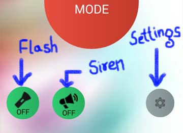
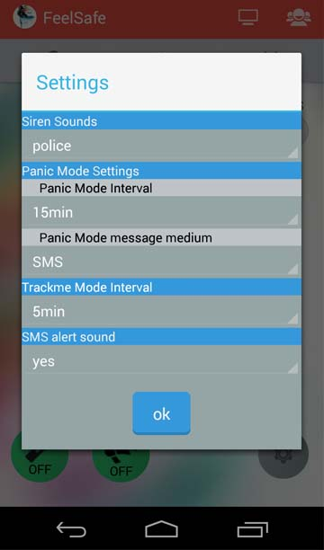

FeelSafe also provides utilities like Flash and Siren sounds that might help in emergency situations.
Both of the toggle buttons are found on bottom-left of the Home Tab.

There are three siren sounds provided, default being police siren.
All the FeelSafe app settings can be set by Settings Button found at bottom-right of home tab. This enables user to just start Panic mode or Track Me mode without having to set the interval or messaging medium everytime they want to start and these settings also serve as universal settings all over the app.
 The Default settings will be shown on click of settings button. You just have to change them and new settings are saved automatically
Siren Sounds can also be set here.